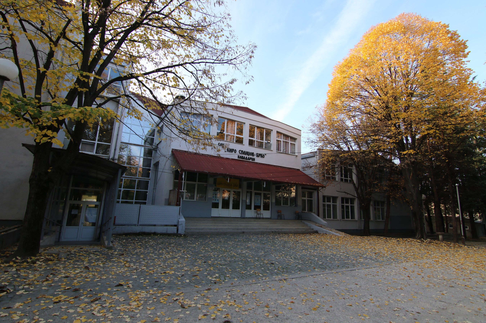

My Education
My academic journey began by attending the local primary school OOU Goce Delcev. Here, they eagerly absorbed knowledge in various subjects, but their interest in computers and technology continued to grow. As I reached the final years of primary school, it was clear that my passion was in the field of computer technology and automatics. Then I attended middle school for a degree in Electrician for Computer Technology and Automatics, which provided me with an understanding of electrical systems, computer hardware, and automation.
This is where I was atending primary school and the most easygiong period of my life
This is where I was atending middle school and where things started getting serious

After finishing middle school I decided to continue my educational journey by pursuing higher studies at the Faculty of Computer Science and Engineering (FINKI). Currently, I am attending FINKI, where I'm further improving their skills and delving deeper into the realms of computer science. Driven by their passion for technology and determination to make a difference in the world of computer science, I'm looking forward to exploring new frontiers, engaging in research, and contributing to innovative technological advancements.